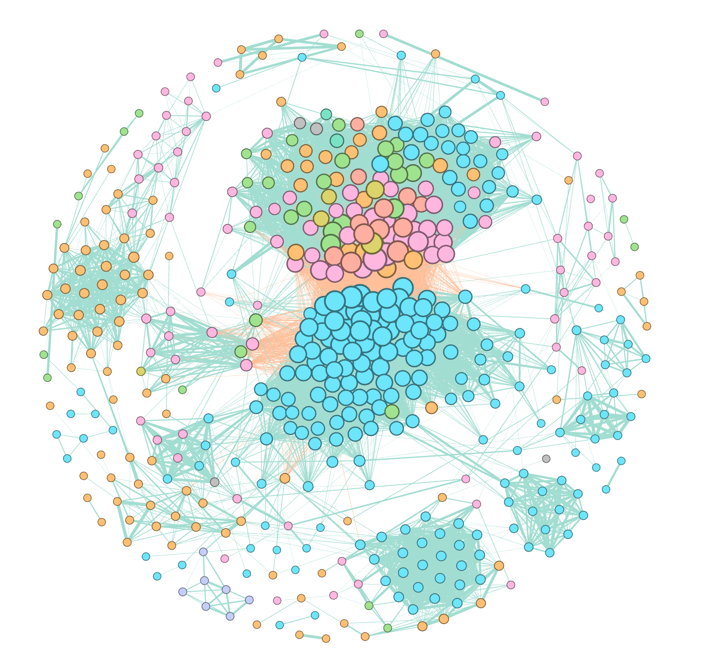
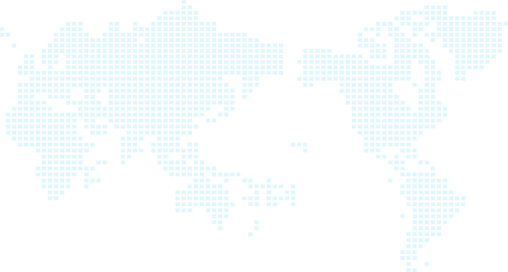
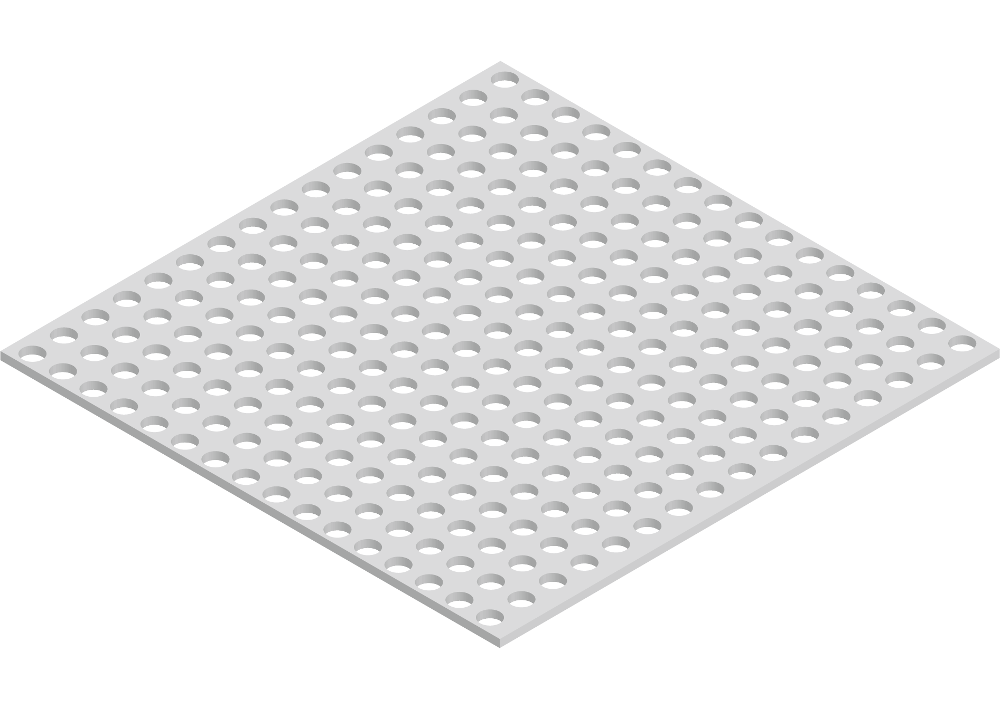
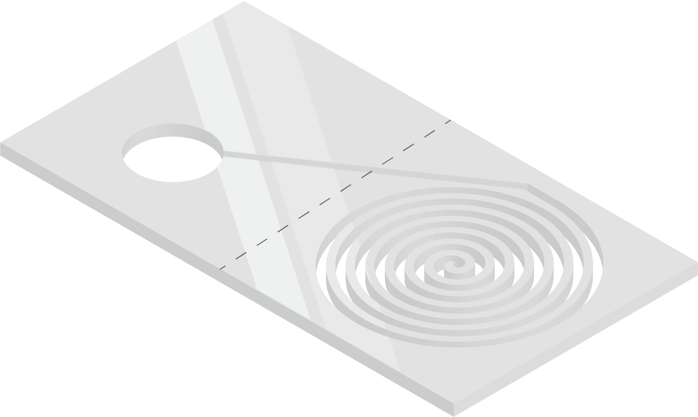
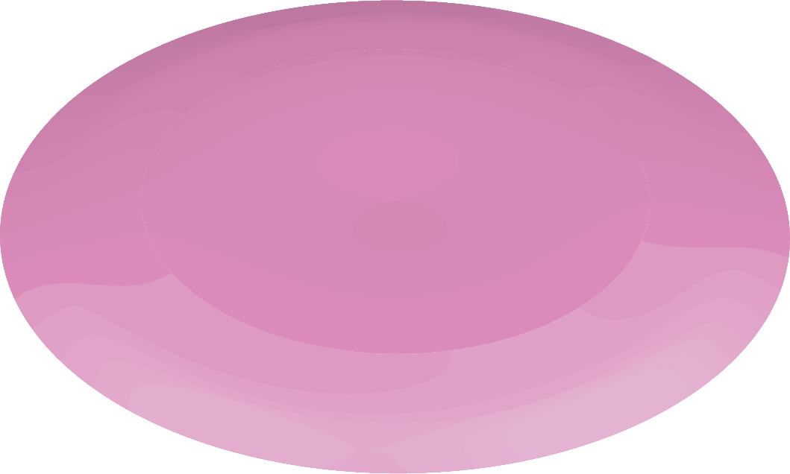
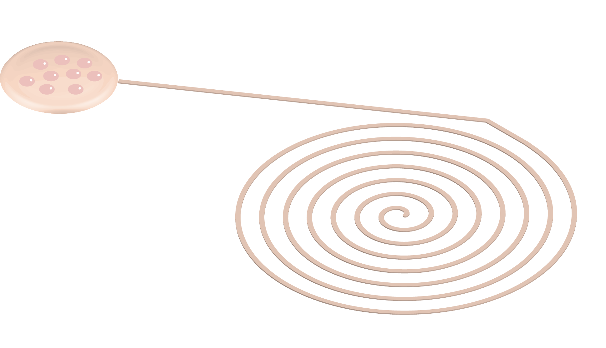
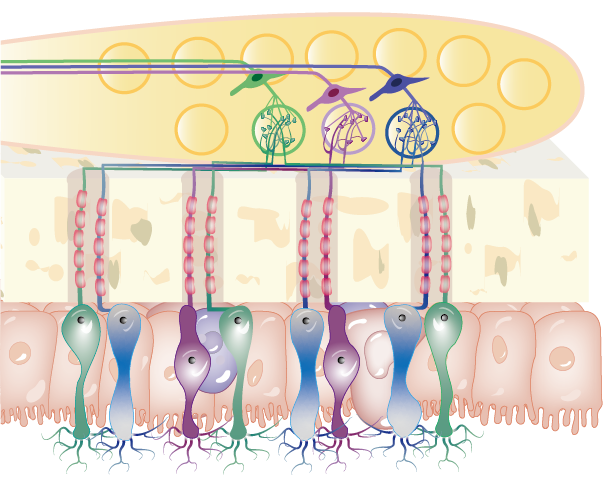
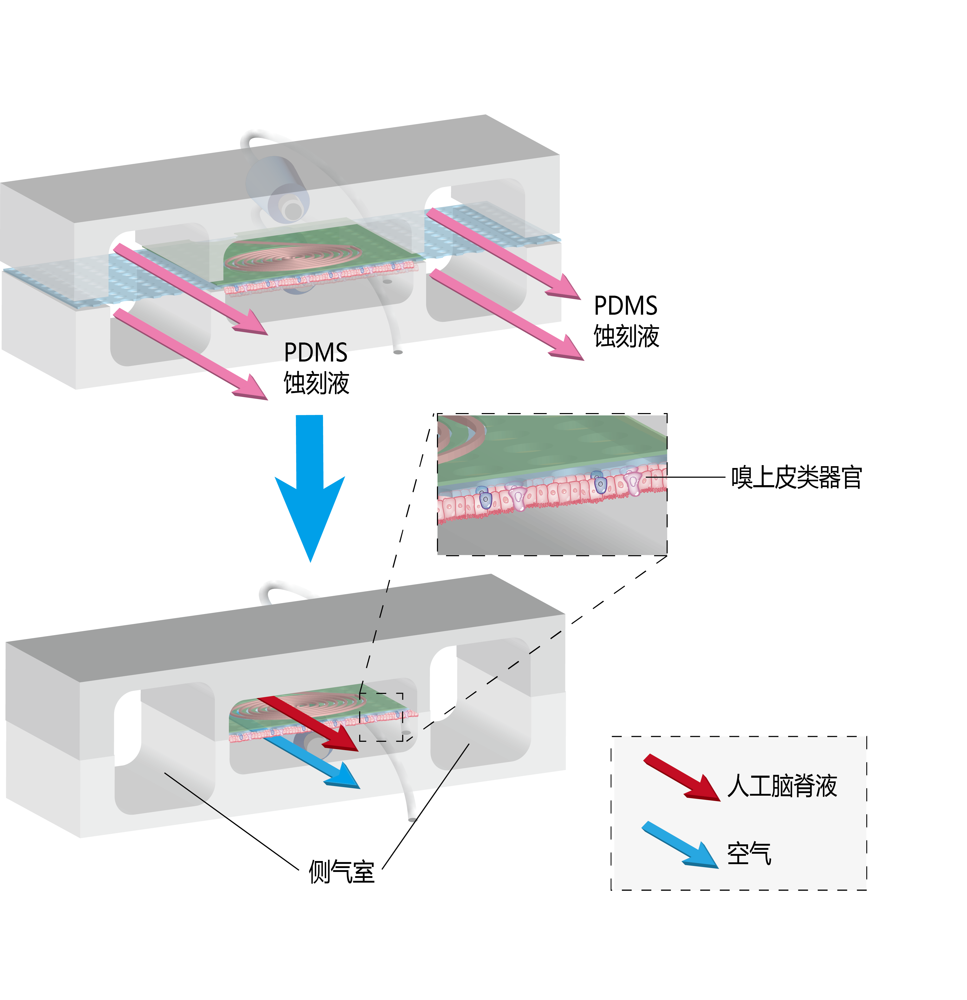

About Me
I am a student from Southern Medical University, majored in clinical medicine.
Passionate about combining medical knowledge with technology to make a difference in healthcare.
Who I Am
Passionate about combining medical knowledge with technology to make a difference in healthcare.
Who I Am

Core Member | ML · Deep Learning · Skin Microbiome Peptides







Core Member | Organoids · Organ-on-a-Chip · Nasopharyngeal Carcinoma
Hands-on experience in animal behaviour research and biochemical laboratory techniques.
Building clean, responsive websites using modern web technologies and GitHub Pages.
Driven by curiosity, guided by evidence, and committed to bridging laboratory discoveries with clinical impact.
"Medicine is a science of uncertainty and an art of probability — my research aims to narrow that uncertainty through rigorous, data-driven inquiry."
Leveraging bioinformatics, causal machine learning, and population-scale biobanks to uncover disease mechanisms hidden in large-scale biological data.
Bridging bench discoveries to bedside applications through organoid models, organ-on-a-chip platforms, and in vivo validation studies.
Committed to transparent methodology, open data practices, and interdisciplinary collaboration as foundations of trustworthy science.